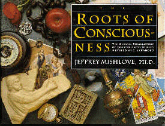

The Roots of Consciousness
Jeffrey Mishlove, PhD

Contents
INTRODUCTION
Dedication
Acknowledgments
and Permissions
Introduction
to Revised Edition
Introduction
to the Original Edition
SECTION I: THE HISTORY OF CONSCIOUSNESS
EXPLORATION
Shamanistic
Traditions
Ancient
Mesopotamia
Ancient
India
-
The Language of Consciousness
-
The Discipline of Yoga
Ancient
China
Ancient
Greece
-
Mystery Traditions
-
Oracles
-
Pythagoras
-
Democritus
-
Socrates
-
Plato
-
Aristotle
-
Neoplatonism
Ancient
Rome
Ancient
Hebrews and Early Christians
-
Prophecy
-
The Teachings of Jesus
-
Christian Saints
-
The Monastic Tradition
Hermeticism
Islamic
Exploration of Consciousness
-
Theories of Occult Radiation
Medieval
and Renaissance Exploration of Consciousness
-
Maimonides
-
Albertus Magnus
-
Cornelius Agrippa
-
Paracelsus
-
John Dee
-
The Rosicrucians
The
Age of Enlightenment
-
Descartes and Mind-Body Dualism
-
Leibnitz and Monadology
-
Idealism
-
Sir Isaac Newton
SECTION II: THE FOLKLORE OF CONSCIOUSNESS
EXPLORATION
Astrology
-
Ptolmaic Astrology
-
Kepler and Astrology
-
Astrology in Contemporary Times
-
Astro-Biology
-
Chronotopology
-
Arthur M. Young's "Geometry of Meaning"
-
Concluding Thoughts on Astrology
Astral
Projection and Out-Of-Body Experiences
-
Ramacharaka's Theosophical Perspective
-
An Accidental Projection
-
OBE In A Dream
-
Conscious Astral Projection
-
Sylvan Muldoon's Method
-
Robert Monroe's Method
-
Robert Crookall's Observations
-
Contemporary Perspectives About OBEs
Healing
-
Healing Temples
-
An Inner Healing Advisor
-
Mesmerism
-
Animal Magnetism
-
Holistic Faith Healing
-
Radionics
-
Edgar Cayce
-
Psychic Surgery
-
Delusion and Fraud
-
Healing at Lourdes
-
Mental Imagery
-
Omega Seminar Techniques
-
A Case Study
-
Ramacharaka's Healing Exercise
-
Deep Healing
Spiritual
Anatomy
-
Thoughtforms
-
The Aura
-
Experimental Tests
-
The Vital Body
-
The Chakras
-
Chinese Acupuncture
-
Wilhelm Reich and Orgone Energy
-
The Soviet Concept of Biological Plasma
-
Kirlian Photography
-
Kirlian Photography Anecdotes
-
The Phantom Leaf Effect
-
Kurt Lewin's Field Theory
Communication
with Higher Intelligence
-
Angels and Guardian Spirits
-
The Glance of the Master
-
Cabala
-
Emmanuel Swedenborg
-
Gustav Theodor Fechner and Psychophysics
-
The Theosophical Society
-
A Course in Miracles
-
The Invisible College
Other
Worlds
-
Swedenborg
-
From India to the Planet Mars
-
The Fatima Appearances
-
UFOs As Apparitions
-
Carl Jung's Interpretation of UFOs
-
Uri Geller and UFOs
-
UFO Research Today
-
The Stella Lansing Case
-
Automobile Teleportation
-
The Strange Case of Dr. X
-
Biological Effects of UFO Contact
-
The Betty and Barney Hill Case
-
Robert Monroe UFO Encounter
-
UFO Contactee Cults
-
Ray Stanford UFO Research
-
Earth's Ambassador
-
Close Encounters
-
Jacques Vallee's Analysis
Life
Within Death -- Death Within Life
Survival of Consciousness After Death
Ancient Egypt
The Tibetan Book of the Dead
The Visions of Gustav Theodore Fechner
Spiritualism
The Spiritism of Allan Kardec
Founding of the Society for Psychical Research
Human Personality and Its Survival of Bodily
Death
The Watseka Wonder
Apparitions and Hauntings
Near Death Experiences
Mediumship
Mrs. Piper
Cross-Correspondences
The "Marjory" Mediumship
Reincarnation
Xenoglossy
Unusual
Powers of Mind Over Matter
-
D. D. Home -- The Greatest Medium Who Ever
Lived
-
Sir William Crookes' Researches
-
Marthe Beraud
-
Paraffin Hands
-
Eusapia Palladino
-
Psychic Photography
-
Nina Kulagina
-
Uri Geller
-
Poltergeist Cases
-
Matthew Manning
-
Philip the Ghost
-
Ted Owens -- The "PK Man"
-
Lightning Striking
-
Weather Control
Firewalking
Psionics
-- Practical Application of Psychic Awareness
-
Harmful Purposes
-
National Security Applications
-
Ancient History and Folklore
-
The World Wars
-
Eastern Europe
-
United States
-
Accident prevention
-
Dowsing
-
Treasure Hunting
-
Accuracy of Information Transmission
-
Psychic Archeology
-
Psychic Police Work
-
Journalism and Investigative Reporting
-
History
-
Precognition in Business Management
-
Public Safety
-
Communication
-
Creativity in Art, Literature and Music
-
Agriculture and pest control
-
Athletics and Sports
-
Finding Lost Objects
-
Scientific Discovery
-
Weather Prediction and Control
-
Animal Training and Interspecies Communication
-
Intuitive Consensus
SECTION III: THE SCIENTIFIC EXPLORATION
OF CONSCIOUSNESS
Introduction
The
Problem of Consciousness
To
Err is Human
-
The Psychology of Cognitive Biases
-
The Illusion of Self-Awareness
-
The Illusion of Control
-
The Need to be Consistent
-
The Sleeper Effect
-
The Effect of Formal Research
Extrasensory
Perception (ESP)
-
Introduction
-
J. B. Rhine's Early Research at Duke University
-
Criticisms of ESP Research
-
Unconscious ESP
-
Dream Telepathy
-
Hypnosis and ESP
-
Exceptional ESP Laboratory Performers
-
Pavel Stepanek
-
Bill Delmore
-
Uri Geller
-
Ganzfeld Research
-
The Experimenter Effect
-
The Sheep-Goat Effect
-
Psi-Missing
-
ESP and Personality Traits
-
Extraversion/Introversion.
-
Effects of Different ESP Targets
-
Psi Mediated Instrumental Response
-
Stanford's Conformance Behavior Model
-
Precognition
Psychokinesis
-
Rhine's Early Studies
-
PK With Random Number Generators (RNGs)
-
Chinese Reports of Psychokinesis Associated
with ESP
-
PK Metal-Bending
-
Bio-PK
Psionics
-- Practical Application of Psychic Awareness
-
Casino Gambling Simulation
-
Possible Psi Healing
-
Bernard Grad's Research at McGill University
-
Conceptual Replications of Grad's Research
-
The Transpersonal Imagery Effect
Proper
Scientific Controls for ESP Experimentation
-
Randomization
-
Sensory Leakage
-
Subject Cheating
-
Recording Errors
-
Classification and Scoring Errors
-
Statistical Violations
-
Reporting Failures
-
Experimenter Fraud
Evaluating
Psi Research
SECTION IV: THEORIES OF CONSCIOUSNESS
Introduction
The
Biological Perspective
-
The Nervous System
-
The Endocrine System
-
The Temporal Lobe Factor in Psychic Experience
-
The Ecology of Consciousness
-
Challenges to the Biological Identity Model
Consciousness
and the New Physics
-
Space-Time According to Einstein
-
Folded Space
-
Multidimensional Spacetime
-
The EPR Effect and Bell's Theorem
-
The Implicate Order
-
Observational Theories
-
Unified Field Theory and Consciousness
-
Evaluating Implications of the New Physics
The
Reflexive Universe
APPENDIX: CONSCIOUSNESS -- A HYPERSPACE
VIEW BY SAUL-PAUL SIRAG
Introduction
Consciousness as Reflection Space
Coda
References
Glossary
Source:
www.williamjames.com |